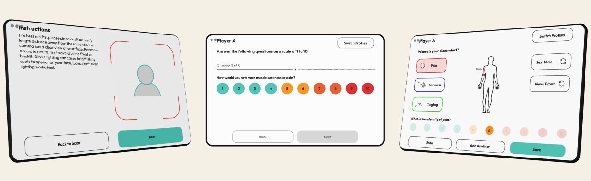

Objective
Transforming a slow, on-paper process into a digital self-report mechanism on a smart mirror, cutting the process time by 80%

The Problem
A leading English Premier League soccer team was tracking their players' weight, biometrics, and sleep data via a manual Excel-sheet questionnaire that ate up to two hours of the team's time every morning.

Chart that was used to track players' recovery every morning.
Players would also frequently give an answer that didn't match their actual sleep quality, just to gain more time on the field. They had wearables tracking biometrics off the field, so there was plenty of data to work with, but no cohesive, efficient workflow. The team physician and coach were trying to optimize performance while ensuring rest and recovery, but were relying on a cumbersome manual process to do it.
My Role & User Research
I worked on the design of the application that would transform the manual process into a digital workflow, in collaboration with the Product Lead who designed the coach dashboard. I adapted the existing brand design for an app that could be accessed on a smart mirror.
I spoke primarily with the Head of Sports Science and Innovation and the Team Physician to gather insights into the workflow of the team every morning. The morning check-in included a one-on-one chat with some team staff who would also take the players’ weight and their biometrics, and then ask them five questions regarding their sleep, fatigue, aches and pains etc., that the players would indicate on a scale of 1-10. This one-on-one chat would end up taking at least an hour everyday, which meant less time out on the field.
The Solutions
To make the morning check-in workflow more efficient, the Product team suggested a smart mirror that could be installed in the locker room for the players to interact with, and a Withings smart scale that records body composition measurements for each individual player, thus eliminating the need to manually record everyone’s weight.
The smart mirror would have a version of the app that was simplified, with a quick scan that took the player’s biometrics while they weighed themselves, leading into a questionnaire screen where the player could self-report their sleep, rest and recovery quality.

Quick wireframing for the scan workflow

Simplified mirror design elements
The design for the smart mirror had to be simplified, with large icons and font sizes, for better visibility in a fast-paced locker room environment. The simple design made for quicker scan times, and the players were more willing to answer wellness questions truthfully because they could report the answer themselves, as opposed to having to tell a medical team member about their fatigue or muscle pain.
The pain marker screen also proved invaluable, allowing players to quickly label their soreness, aches, and other sensations on the figurine.

The medical team running through the workflow on the smart mirror
Changes, Issues, and Lessons
In the first iteration of the design, after the scan was completed, the biometric results would appear for the players’ reference. After initial testing with the medical team and the players, I received feedback that the players did not want to check what their biometrics were in the morning, so we removed that screen. The results would surface only on the dashboard, which the medical team could access.
The psychology of athletes posed a unique set of challenges in this project, leading to this particular no-frills design iteration being the final version that was deployed on the mirror. Designing for a smart mirror interface was also a difficult problem, and I had to learn about spacing constraints and responsive redesign to ensure the app would run on any orientation.